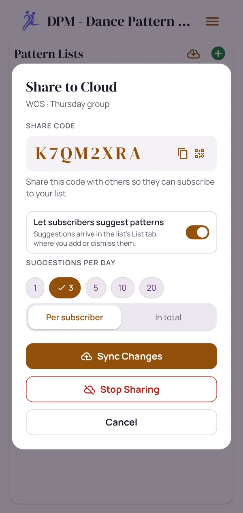
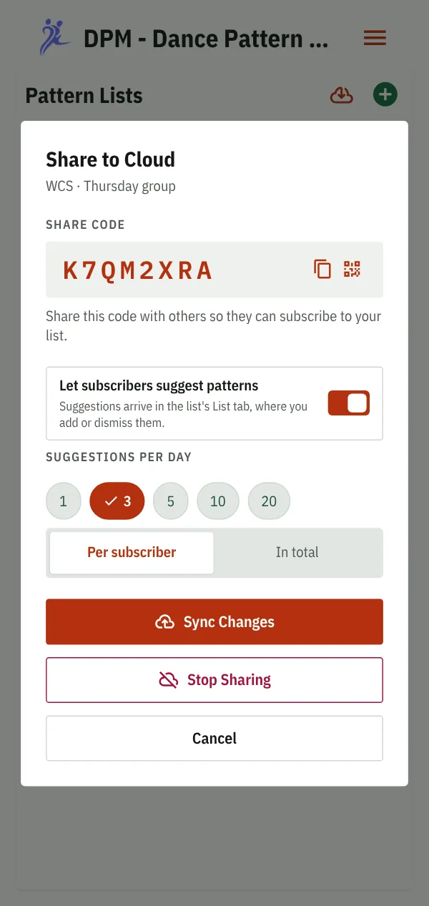
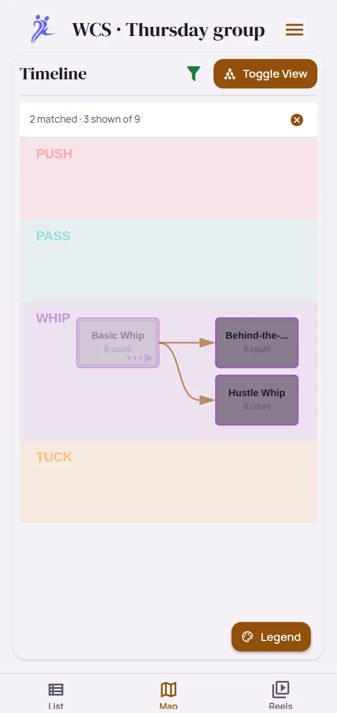
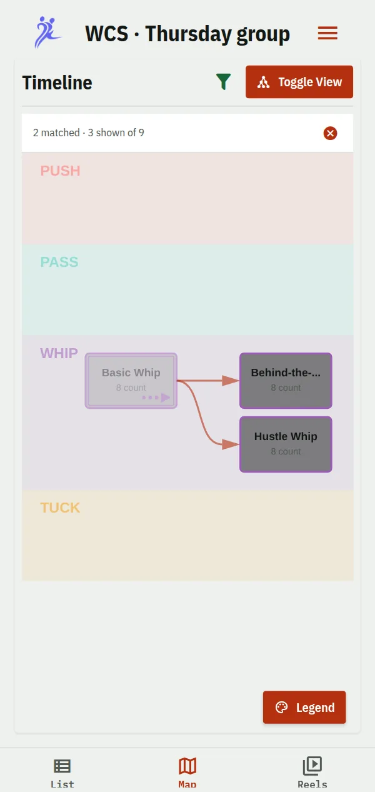
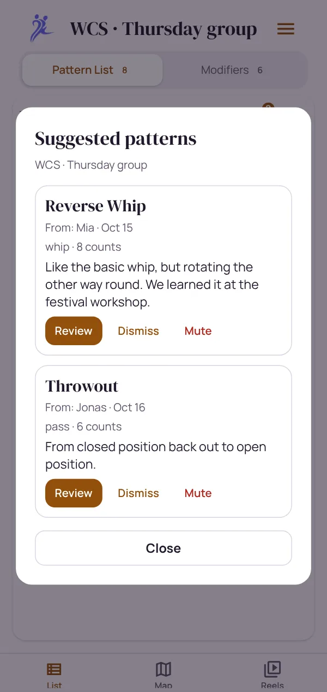
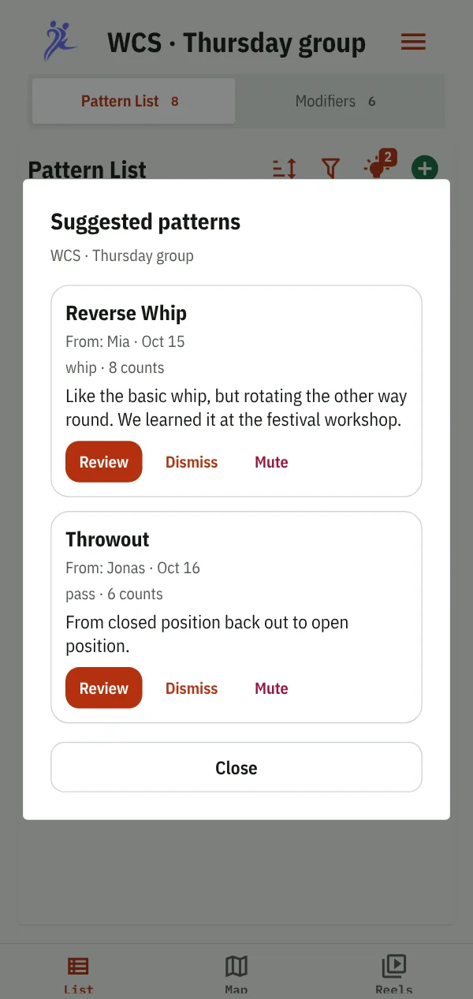

Your course material, under your control.
Keep one list per group and add each figure as you teach it. Your students get it on their phones, and you decide who gets in, how much they may add, and who can watch your videos.


Setting up a course
-
One list for the group
Start from a template or a blank list, with your own pattern types and modifiers. Add each figure as you teach it, with a tag for the course.
-
Publish and show the code
Publishing gives the list an 8-character code and a QR code to show in class. Students who scan it or type the code get a live, read-only copy.
-
Let it grow
Every figure you add appears on their phones, and the list carries on when the group moves up to the next course.
A list that grows with your group
Groups often stay together for years. Rather than a new list each term, keep one, and tag each figure with the course it belongs to, or the festival weekend you brought it back from.
Your students filter for this course's tag and see each new figure together with the ones it builds on, faded behind it. Variations go on a figure as modifiers, such as the basic whip "with inside turn", so the list doesn't fill up with near-duplicates.


Decide who gets in
A published list is as private as its code. Members only closes it, so the code alone no longer opens it.
Anyone with the code
The default. Good for a festival class or an open practice group, where you'd hand the code to anyone who asks.
Only the people you let in
- Students who enter the code ask to join, with a name
- You let in the ones you know, or decline
- Someone you remove keeps the copy they have, but gets no further updates
A password on the videos too
Vimeo videos can ask for a password, which you tell your group in class. Members see the list; only someone with the password plays the video.
Switching a published list to members only shuts out everyone subscribed so far, until they ask to join and you let them in, so it's best decided when you publish. Anyone you let in can still pass a video link on: share with people you trust.
Decide how much your class adds
Let subscribers suggest figures for your list: its name, type and counts, a description and video links. A suggestion waits in your list until you correct it and add it with one tap, or dismiss it.
- Off until you switch it on, in the list's sharing settings
- A daily limit, per subscriber or for the whole list
- Mute anyone who sends too many, and unmute them later
- On a members-only list, only members can suggest
Handy when students take turns filming the figure of the week: they send it in, you check it before the whole group sees it.


Videos with limited public access
A published list carries video links, not files, so your clips live on a video host. These play right inside DPM, so your students never need to leave the app:
YouTube, unlisted
Free, and hidden from search: only someone with the link finds it. Add the link with the second the figure starts.
Vimeo, private link or password
An unlisted Vimeo video plays from its private link, which DPM keeps intact. A password-protected one asks for the password in the player.
Dropbox, files and streams
Dropbox share links, video files on your own web space, and HLS or DASH streams play too. A link that won't play, such as a Google Drive page, gets a warning.
Straight from your phone
Filmed it in class? Put online hands the clip to your YouTube or Vimeo app and swaps it for the link when you share that back. Shorten and anonymize it first, all on the phone.
Questions
Can my students change my list?
No. Their copies are read-only and follow every change you make. Only you can update the list or stop sharing it.
What happens if I stop sharing?
The cloud copy is deleted right away. Your students keep their copy, and it becomes theirs to edit, without further updates.
Can I hand out a list without the cloud?
Yes. Export it as read-only, with or without the videos inside, and send the file. Whoever imports it can watch but not edit. Transcripts are left out unless you choose to include them.
Do I see who my students are?
Only the name they give when they ask to join or suggest a pattern. Behind it is an anonymous ID, with no account or contact details.
Read on
Keep track of your own progress
Every figure from your courses and festivals, with your videos and how they connect.
Read more → With classmatesOne list for your class
Classmates or friends follow one list that one of you keeps, and take turns filming.
Read more → As a studentYour teacher's list on your phone
What to expect from a course list, and how to subscribe with a code.
Read more →